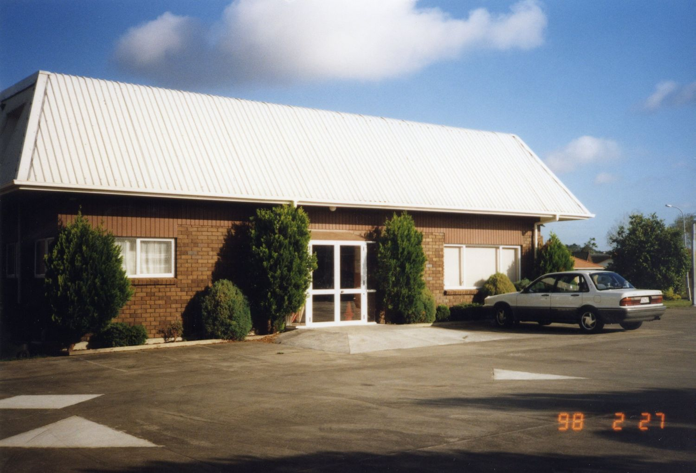
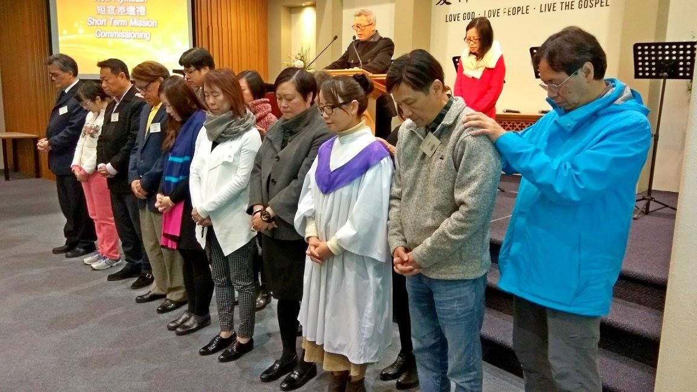
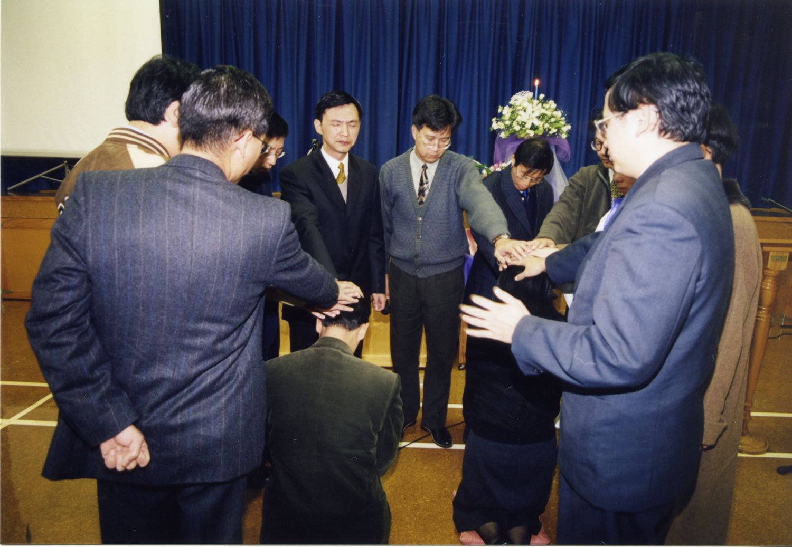

Our church is called the Evangelize China Fellowship Holy Word Church of Auckland. It is one of the many churches within the Evangelize China Fellowship.
Pastor Andrew Gih founded ECF in 1947 in Shanghai. Subsequently, it developed Ministry work, including churches, seminaries, orphanages and publishers. These ministries are distributed in Hong Kong, Macau, Taiwan, USA, Indonesia, Malaysia, Thailand and New Zealand.
By the grace of God, the Evangelize China Fellowship Holy Word Church of Auckland was established by Pastor Clement Man and a group of members. It was dedicated to God on 22 nd May 1994 at the first Sunday Service which was held at Pastor Man’s home. That same year in July, the church began to borrow the music room at Wakaaranga Primary School to hold the Sunday services. Fellowship meetings and bible group studies continued to meet at Pastor Man’s home. The first official inaugural thanksgiving worship service of the church was held in the hall of the above-mentioned Primary school on 11 September 1994. Subsequently, the Sunday services had to be moved to the school hall due to the rapid growth of the congregation.
The first baptism was held in the Howick Baptist Church on 24 th October 1994. A total of ten believers were baptised. Seeing God’s hand in terms of the growth in ministries and saved members, the church deacons decided that the church should have its own building for long-term development. In view of the church being only recently established and due to the lack of funding, the Deacon Board passed through the resolution of establishing a Church Building Fund on 12 th October 1994. It was the initial step towards having our own church building.
In February 1996, we rented part of Pakuranga Intermediate to start the Holy Word Chinese School. This was welcomed by many parents. Lots of students enrolled in the school. In the same year in August, as part of our effort in evangelism, we sang hymns in the streets of Auckland and distributed Gospel flyers. In October 1966, we bought our first church building at 10 Gwenand Place, Highland Park as a church office. We sold this in March 1998. With the money, we then purchase a property at 10 Dana Place and used it for church purposes. Subsequently we sold 10 Dana Place in October 2005. After that, we bought the property at 2 Basalt Place, East Tamaki, where we could accommodate the whole congregation for Sunday services and other daily church gatherings. Due to the timing of renovations, we did not hold the first Sunday worship service at Basalt Place until 16 th July 16, 2006. From that day, we ended the renting of Wakaaranga Primary School.
By the grace of God, the congregation kept on increasing in numbers. In terms of mission, our church developed a Mandarin ministry with the launch of the first Mandarin Sunday Service on 3 rd March 2002.
Due to the language need of the English speaking members, the English Sunday Service was started on April 1, 2007.
In August 2003, we changed our church leadership structure from Church Committee to Deacon Board, and, at the same time, fully implemented a departmental ministry system.
Evangelize China Fellowship is a denomination that emphasizes evangelism and mission. Thus the Holy Word Church of Auckland has underscored the significance of the Great Commission of our Lord Jesus Christ since her establishment. Since evangelism and mission must stemmed from the love of God and love for human kind, and in order to uphold the Great Commission, we have to cultivate a congregation that is permeated with true Biblical love. Therefore we place the emphasis of our pastoral ministry in teaching and training so as to nurture true disciples.
With clear vision and undertaking, we have pursued these goals in all our gatherings and activities. Looking back, in terms of evangelism and mission, we have special events during the annual mission month, prayer meetings and special gathering for mission work, road side outreach, door-to-door evangelism, group mission for the Evangelism Explosion III team, short term missions, commissioning and supporting of missionaries as well as the establishment of mission fund. Regarding mutual ministering, we have church retreats, regular fellowship gatherings, love-feasts so as to attain the commandment of Jesus that we should love one another. We have made use of Sunday school as the primary mode for teaching and training. We also held regular Bible study groups, training sessions and hosted broadcast nurturing meetings for our congregation.
Our Story in Photos
The existing English page has no photos. These are selected from the Chinese page, with dates as shown there.
First Sunday Worship
22 May 1994
1st Anniversary
21 May 1995

10 Dana Place
8 Mar 1998

First Short-Term Mission Team
22 Dec 1998
5th Anniversary Thanksgiving Service
30 May 1999

Commissioning Our First Missionaries
15 July 2001

Mandarin Service

10th Anniversary Combined Service
23 May 2004

English Service
1 April 2007

15th Anniversary
24 May 2009

Building Dedication
25 May 2015